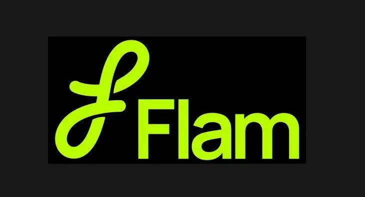

Part VI · The Kingdom by the Geek, 2024 to 2026 · 34 of 57
Chapter 32 · Flam: the ghost of Ra.One meets the AI era
On 15 September 2026 he was named among the investors in a US$40 million Series B round, led by QED Investors, for Flam, a company that builds AI-powered interactive content. One of its products makes interactive videos that can swap a person, a product or a scene during playback. (Fact. YourStory, 15 Sept 2026)

Flam, the AI interactive-content company he invested in, September 2026. (Image: Final Thesis archive)
That is a documented link between Shah Rukh Khan and a business in AI-made interactive media. It is not evidence that Flam is working on KING’s campaign, that SRKWorld is coming back, or that any of the proposals in Part VII have been commissioned. (Method note) The distinction between a real investment and a speculative connection is exactly what makes the question interesting. (Analysis)
Three technological eras sit behind him. 2011: the character and platform era, games, comics, merchandise. 2013: the data era, social listening and daily recalibration. 2026: the AI era, in which a face can be swapped during playback. (Analysis) The man who built a digital kingdom in 2011 is now putting money into AI content in the same year fans are already making him with AI, without asking. The question of who owns a face is no longer abstract for him. (Analysis)
The showman is back on stage. Not as a man asking to be seen, but as one the world asks to see. So what does Mr. Khan have up his sleeve? Rumour has it something is cooking. (Analysis; the author’s question)
From the Final Thesis
Added from the Final Thesis, word for word. Where a figure here differs from the sourced figure earlier in this chapter, the chapter’s figure stands; see Addendum B.
The FLAM development
In September 2026, FLAM announced a $40 million Series B funding round led by QED Investors, with Shah Rukh Khan among the participating investors. The company describes its work as AI-powered interactive content, with applications including marketing, entertainment, and fan engagement.
This is a particularly interesting development in the context of the earlier campaigns.
The technology categories that could have seemed experimental in 2011—interactive characters, digital fan participation, immersive media, and entertainment-based technology—now sit alongside rapidly developing AI and interactive-content businesses.
FLAM’s announcement establishes his participation as an investor. It does not establish that he is developing a KING campaign with FLAM, that the company is working on a Shah Rukh Khan digital twin, or that any specific project is under development.
But the connection between his historical interest in technology and his current investment activity makes the question worth asking.
(Final Thesis, section 13)
FLAM: The AI connection
In September 2026, FLAM announced a $40 million Series B funding round led by QED Investors, with Shah Rukh Khan among the participating investors. The company describes its technology as supporting interactive AI-generated content across marketing, product visuals, learning, entertainment and fan engagement.
This is a documented investment connection.
It is not confirmation that Khan is developing a digital twin, an AI campaign for KING, or a particular fan storytelling platform through FLAM.
But consider the historical sequence.
In 2011, Ra.One explored a character who could exist beyond the screen.
In 2013, Chennai Express demonstrated how digital participation could move a shared campaign forward.
In 2026, AI technologies are increasingly capable of helping users create visual concepts, stories and interactive content.
The technological barrier to fan participation is changing.
A campaign that once required a large studio, a dedicated development team and a substantial production budget could, in principle, be reimagined as a toolset in which fans contribute their own stories and visual ideas.
The key question is no longer merely whether a campaign can use AI.
It is whether AI can become the creative infrastructure of a fan-powered entertainment universe.
(Final Thesis, section 37)
FLAM: The ghost of Ra.One meets the AI era
The most recent technology connection in this investigation is FLAM.
Business Standard reported on September 15, 2026, that FLAM raised $40 million in a Series B round led by QED Investors, with Shah Rukh Khan among the investors. The report describes FLAM as an AI-powered interactive-content company and says the company reported more than 100 enterprise customers.
This is a documented connection between Shah Rukh Khan and a business operating in AI-enabled interactive media.
It is not evidence that FLAM is developing the marketing campaign for KING. It does not establish that SRKWORLD is an official project, or that the proposed fan-franchising model has been commissioned.
(Final Thesis, section 66)
Three technological eras
Games, graphic novels, character merchandise, bespoke digital assets and cross-platform campaign extensions.
Social-media measurement, audience engagement, campaign analytics and the management of digital conversation.
2026 and beyond: Potentially personalised content, AI-assisted storytelling, interactive experiences and creator participation at scale.
The first two eras are grounded in the historical campaign records.
The third is a technological possibility, not a claim about a confirmed KING strategy.
The comparison is nevertheless valuable. In 2011, building a bespoke digital experience required significant production and distribution effort. Modern AI tools can potentially reduce the cost of creating variations of content, while interactive technologies can allow audiences to respond to and influence an experience.
Whether those capabilities can be deployed responsibly and commercially around a film is a separate question.
(Final Thesis, section 66)
The hypothesis
Could the next stage of entertainment marketing move from distributing content to enabling audiences to create within a controlled, licensed universe?
In this model, the film remains the central creative property, but the audience’s experience could extend into interactive stories, games, local events, fan challenges and original creative work.
The potential benefit is continuity: an audience relationship that does not have to be rebuilt from zero with every release.
The risks are equally substantial: unauthorised use of likenesses, unclear ownership of AI-generated material, privacy concerns, low-quality content, and the possibility that commercial incentives overwhelm the creative relationship between a star and the audience.
FLAM is relevant because it establishes a real technology-investment connection. SRKWORLD is relevant because it articulates a possible fan-facing architecture. Neither fact proves that the two are connected.
The bridge between them is a research hypothesis—not a revelation about a secret plan.
(Final Thesis, section 66)